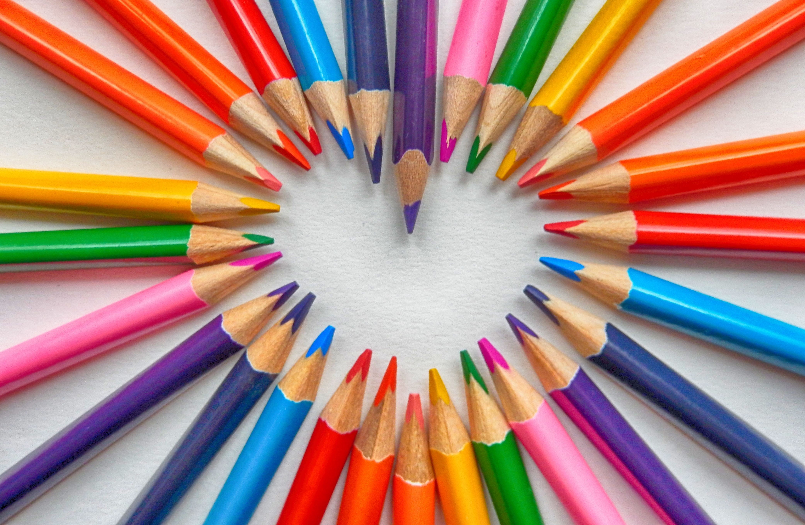
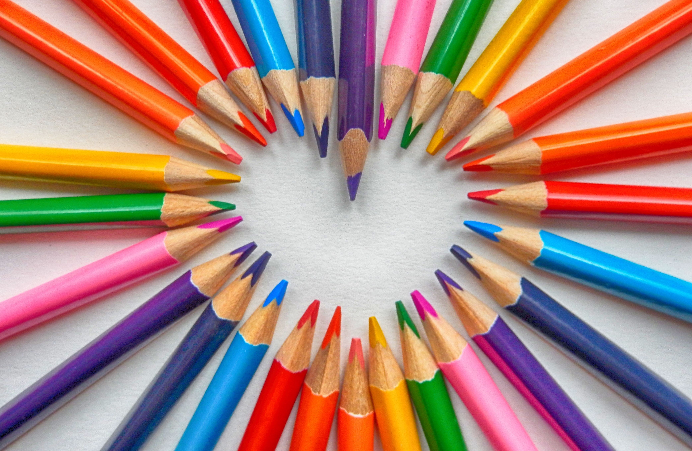

Why drawing is amazing?
I enjoy drawing for a lot of reasons, being the most important: it's an activity that I can do indoors or outside, it relaxes me, I can do while listening podcast, music or an audio-book, I can see and measure my progress, it is artistic, can be cheap and fast or take hours and be a profession, can be done individual or with people, can get as complex as you want to, I can keep the result with me or give it to the people I love, and it makes me happy and I can make people happy as well.
If you're interested in this hobby, there's a couple of thing to have in mind before going deep:
- Identify what calls you.
- Get and understand how to used the right utensils.
- Work in projects, keep momentum
Perhaps you want to become a tattoo artist, or a digital illustrator, or simple you used to draw in high school, enjoy manga or comics, or now days, you love to draw your pet or family members. Whatever your passion is, search a lot a about it.
 

There are many options for drawing, so many that it is overwhelming. You will have to have an idea of what are you planning to draw to pick the right set of pencils papers and tables if interested in digital illustration. Pencils can go from H for sketching, to 8B pencils like charcoal, you can also find colored pencils, watercolors, sepia, and accessories as blurs and razors. Tablets can go from $20 but tablets of greater precision and size can go more than $500, and drawing programs can go from free as GIMP, Krita up to hundreds like Photoshop and Illustrator, and after Effect. Keep it in your budged, be strategic.

Practice, practice, practice until you get confortable with an style and a technique. Those who has mastering the art of drawing are those who spend hours perfecting their craft, it can get as complex as you want to, from simple sketch until a complete study of the human figure.